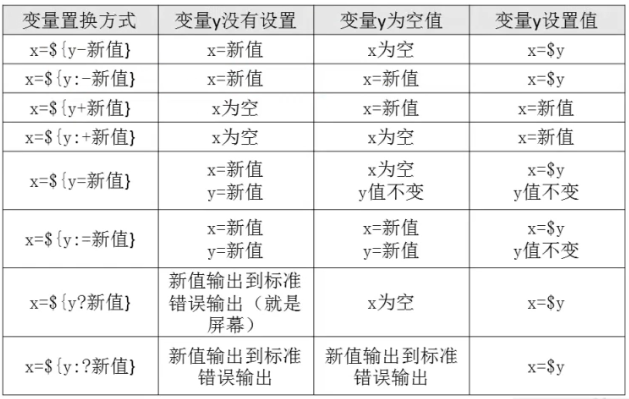

shell是一个命令解释器，它为用户提供了一个向linux内核发送请求以便运行程序的界面系统级程序，用户用shell来启动、挂起、停止甚至是编写一些程序；
shell还是一个功能相当强大的编程语言，易编写，易调试，灵活性强。shell是解释执行的脚本语言，在shell中可以直接调用Linux系统命令。
二、shell脚本的执行方式
echo输出命令
[root@localhost ～]# echo [选项] [输出内容]
选项：
-e 支持把斜线控制的字符转换
-n 取消输出后行末的换行符号（就是内容输出后不换行）
例：[root@localhost ~]# echo -n "M. shen chao is the most honest man in LampBrother! "
M. shen chao is the most honest man in LampBrother! [root@localhost ~]#
#如果加入了“-n”选项，输出内容结束后，不会换行直接显示新行的提示符。
命令中加入了-e选项，则可以支持控制字符，如表所示：
| 控制字符 | 作用 |
| \\ | 输出\本身 |
| \a | 输出警告音 |
| \b | 退格键，也就是向左删除键 |
| \c | 取消输出行末的换行符。和“-n”选项一致 |
| \e | ESCAPE键 |
| \f | 换页符 |
| \n | 换行符 |
| \r | 回车键 |
| \t | 制表符，也就是TAB键 |
| \v | 垂直制表符 |
| \0nn | 按照八进制ASCII码表输出字符。其中0为数字零，nnn是三位八进制数 |
| \xhh | 按照十六进制ASCII码表输出字符。其中hh是两位十六进制数 |
[root@localhost ～]# echo -e "ab\bc" #删除左侧字符
[root@localhost ～]# echo -e "a\tb\tc\nd\te\tf" #制表符与换行符
[root@localhost ～]# echo -e "\x61\t\x62\t\x63\n\x64\t\x65\t\x66"
[root@localhost ～]# echo -e "\e[1;31m abcdefg \e[0m" #输出颜色
#30m=黑色，31m=红色，32m=绿色，33m=黄色
#34m=蓝色，35m=洋红，36m=青色，37m=白色
脚本执行
赋予执行权限，直接运行
chmod 755 hello.sh
./hello.sh #相对路径执行
/root/sh/hello.sh #绝对路径执行
通过Bash调用执行脚本
bash hello.sh
三、Bash基本功能
1、历史命令
1）历史命令
[root@localhost ～]# history [选项] [历史命令保存文件]
选项：
-c: 清空历史命令
-w: 把缓存中的历史命令写入历史命令保存文件～/.bash_history
历史命令默认会保存1000条，可以在环境变量配置文件/etc/profile中进行修改
2）历史命令的调用
使用上下箭头调用以前的历史命令
使用“!n”重复执行第n条历史命令
使用“!!”重复执行上一条命令
使用“!字符串”重复执行最后一条以该字串开头命令
2、命令与文件补全
在Bash中，命令与文件补全是非常方便与常用的功能，我们只要在输入命令或文件时，按“Tab”键就会自动进行补全。
3、命令别名
[root@localhost ～]# alias 别名=‘原命令’ #设定命令别名
[root@localhost ～]# alias #查询命令别名
[root@localhost ～]# vi /root/.bashrc #编辑.bashrc可以让别名永久生效
命令执行时顺序
第一顺位执行绝对路径或相对路径执行的命令
第二顺位执行别名
第三位执行Bash的内部命令
第四顺位执行按照$PATH环境变量定义的目录查找顺序找到的第一个命令
4、Bash常用快捷键
| 快捷键 | 作用 |
| ctrl+A | 把光标移动到命令行开头。 |
| ctrl+E | 把光标移动到命令行结尾。 |
| ctrl+C | 强制终止当前命令。 |
| ctrl+L | 清屏，相当于clear命令。 |
| ctrl+U | 删除或剪切光标之前的命令。 |
| ctrl+K | 删除或剪切光标之后的内容。 |
| ctrl+Y | 粘贴ctrl+U或ctrl+K剪切的内容。 |
| ctrl+R | 在历史命令中搜索，按下ctrl+R之后，就会出现搜索界面，只要输入搜索内容，就会从历史命令中搜索。 |
| ctrl+D | 退出当前终端。 |
| ctrl+Z | 暂停，并放入后台。这个快捷键牵工作管理内容，我们常在系统管理章节详细介绍。 |
| ctrl+S | 暂停屏幕输出 |
| ctrl+Q | 恢复屏幕输出 |
5、输入输出重定向
1）标准输入输出
| 设备 | 设备文件名 | 文件描述符 | 类型 |
| 键盘 | /dev/stdin | 0 | 标准输入 |
| 显示器 | /dev/stdout | 1 | 标准输出 |
| 显示器 | /dev/stderr | 2 | 标准错误输出 |
2） 输出重定向
| 类型 | 符号 | 作用 |
| 标准输出重定向 | 命令 > 文件 | 以覆盖的方式，把命令的正确输出输出到指定文件或设备当中。 |
| 命令 >> 文件 | 以追加的方式，把命令的正确输出输出到指定文件或设备当中。 | |
| 标准错误输出重定向 | 错误命令 2> 文件 | 以覆盖的方式，把命令的错误输出输出到指定文件或设备当中。 |
| 错误命令 2>> 文件 | 以追加的方式，把命令的错误输出输出到指定文件或设备当中。 | |
| 命令 > 文件 2>&1 | 以覆盖的方式，把正确输出和错误输出都保存到同一文件当中。 | |
| 命令 >> 文件 2>&1 | 以追加的方式，把正确输出和错误输出都保存到同一文件当中。 | |
| 正确输出和错误输出同时保存 | 命令 &> 文件 | 以覆盖的方式，把正确输出和错误输出都保存到同一文件当中。 |
| 命令 &>> 文件 | 以追加的方式，把正确输出和错误输出都保存到同一文件当中。 | |
| 命令>>文件1 2>>文件2 | 把正确的文件输出追加到文件1，把错误的输出追加到文件2中。 |
3）输入重定向
[root@localhost ～]# wc [选项] [文件名]
选项：
-c 统计字节数
-w 统计单词数
-l 统计行数
命令<文件 把文件作为命令的输入
6、多命令顺序执行
| 多命令执行符 | 格式 | 作用 |
| ； | 命令1；命令2 | 多个命令执行，命令之间没有任何逻辑联系 |
&& | 命令1&&命令2 | 逻辑与 当命令1正确执行，则命令2才会执行 当命令1执行不正确，则命令2不会执行 |
|| | 命令1||命令2 | 逻辑或 当命令1执行不正确，则命令2才会执行 当命令1正确执行，则命令2不会执行 |
[root@localhost ～]# dd if=输入文件 of=输出文件 bs=字节数 count=个数
选项：
if=输入文件 指定源文件或源设备
of=输出文件 指定目标文件或目标设备
bs=字节数 指定一次输入/输出多少字节，即把这些字节看做一个数据块
count=个数 指定输入/输出多少个数据块
范例:
[root@localhost ～]# date ；dd if=/dev/zero of=/root/testfile bs=1k count=100000; date
7、管道符
[root@localhost ～]# 命令1 | 命令2 #命令1的正确输出作为命令2的操作对象
8、 通配符
| 通配符 | 作用 |
| ? | 匹配一个任意字符。 |
| * | 匹配0个或任意多个任意字符，也就是可以匹配任何内容。 |
| [ ] | 匹配中括号中任意字符。例如：[abc]代表一定匹配一个字符，或是a，或是b，或者是c。 |
| [-] | 匹配中括号中任意字符，-代表一个范围。例如：[a-z]代表匹配一个小写字母。 |
| [^] | 逻辑非，表示匹配不是中括号内的一个字符。例如：[^0-9]代表匹配一个不是数字的字符。 |
9、Bash中其他特殊符号
| 符号 | 作用 |
| '' | 单引号。在单引号中所有的特殊符号，如“$”和“`”（反引号）都没有特殊含义 |
| "" | 双引号。在双引号中特殊符号都没有特殊含义，但是“$”、“`”和“\”是例外，拥有“调用变量的值”、“引用命令”和“转义符”的特殊含义。 |
| `` | 反引号。反引号括起来的内容是系统命令，在Bash中会执行它。和$()作用一样，不过推荐使用$()，因为反引号非常容易看错。 |
| $() | 和反引号作用一样，用来引用系统命令。 |
| () | 用于一串命令执行时，（）中的命令会在子shell中运行 |
| { } | 用于一串命令执行时，{ }中的命令会在当前shell中执行。也可以用于变量变形与替换。 |
| # | 在shell脚本中，#开头的行代表注释。 |
| $ | 用于调用变量的值，如需要调用变量name的值时，需要用$name的方式得到变量的值。 |
| \ | 转义符，跟在\之后的特殊符号将失去特殊含义，变成普通字符。如\$将输出“$”符号，而不当做是变量引用。 |
1）单引号和双引号
[root@localhost ~]# name=sc #定义变量name的值是sc
[root@localhost ~]# echo '$name' #如果输出时使用单引号，则$name原封不动输出
$name
$name
[root@localhost ~]# echo "$name" #如果输出时使用双引号，则会输出变量name的值sc
sc
sc
[root@localhost ~]# echo `date` #反引号括起来的命令会正常执行
2015年 05月 02日 星期六 02:25:35 CST
2015年 05月 02日 星期六 02:25:35 CST
[root@localhost ~]# echo '`date`'
`date`
#但是如果反引号命令被单引号括起来，那么这个命令不会被执行，`date`会被当成普通字符输出
[root@localhost ~]# echo "`date`" #如果是双引号括起来，那么这个命令又会正常执行
2015年 05月 02日 星期六 02:26:48 CST
2015年 05月 02日 星期六 02:26:48 CST
2）反引号
[root@localhost ~]# echo ls
ls
ls
#如果命令不用反引号括起来，命令不会执行，而是作为字符直接输出
[root@localhost ~]# echo `ls`
anaconda-ks.cfg install.log install.log.syslog
anaconda-ks.cfg install.log install.log.syslog
#用反引号包含，命令会正确执行
[root@localhost ~]# echo $(date)
2015年 05月 02日 星期六 02:32:57 CST
2015年 05月 02日 星期六 02:32:57 CST
#使用$(命令)的方式命令也可以执行
3）小括号、中括号和大括号
小括号与大括号的区别。如果是用于一串命令的执行，那么小括号和大括号的主要区别在于：
( )执行一串命令时，需要重新开一个子shell进行执行
{ }执行一串命令时，是在当前shell执行
( )和{ }都是把一串的命令入在括号里面，并且命令之间用；号隔开
( )最后一个命令可以不用分号
{ }最后一个命令要用分号
{ }的第一个命令和左括号之间必须有一个空格
( )里的命令不必和括号有空格
( )和{ }中括号里面的某个命令的重定向只影响该命令，但是括号外的重定向则影响到括号里的所有命令
[root@localhost ~]# name=sc
#在父shell中定义变量name的值是sc
[root@localhost ~]# (name=liming;echo $name)
liming
[root@localhost ~]# (name=liming;echo $name)
liming
#如果用( )括起来一串命令，这些命令都可以执行
#给name变量重新赋值，但是这个值只在子shell中生效
[root@localhost ~]# echo $name
sc
sc
#父shell中name的值还是sc，而不是liming
[root@localhost ~]# { name=liming;echo $name; }
liming
liming
#但是用大括号来进行一串命令的执行时，name变量的修改是直接在父shell当中的，注意大括号的格式
[root@localhost ~]# echo $name
liming
liming
#所以name值已经被修改了
四、Bash变量
1、什么是变量
变量是计算机内存的单元，其中存放的值可以改变。
变量设置规则
变量名称可以由字母、数字和下划线组成，但是不能以数字开头。如果变量名是“2name”则是错误的
在Bash中，变量的默认类型是字符串型，如果要进行数值运算，则必须指定变量类型为数值型。
变量用等号连接，等号左右两侧不能有空格。
变量的值如果有空格，需要使用单引号或双引号包括。
在变量的值中，可以使用“\”转义符。
如果需要增加变量的值，那么可以进行变量值的叠加。不过变量需要用双引号包含“$变量名”或用${变量名}包含。
如果是把命令的结果作为变量值赋予变量，则需要使用反引号或$()包含命令。
环境变量名建议大写，便于区分。
2、变量分类
用户自定义变量
环境变量：这种变量主要保存的是和系统操作环境相关的数据。
位置参数变量：这种变量主要是用来向脚本当中传递参数或数据的，变量名不能自定义，变量作用是固定的。
预定义变量：是Bash中已经定义好的变量，变量名不能自定义，变量作用也是固定的。
3、本地变量
1）变量定义
[root@localhost ～]# name=tom
2）变量叠加
[root@localhost ～]# aa=123
[root@localhost ～]# aa="$aa"456
[root@localhost ～]# aa=${aa}789
3）变量调用
[root@localhost ～]# echo $name
4）变量查看
[root@localhost ～]# set
5）变量删除
[root@localhost ～]# unset name
4、环境变量
export 变量名=变量值 #申明变量
env #查询变量
unset 变量名 #删除变量
系统常见环境变量
PATH: 系统查找命令的路径
[root@localhost ～]# echo $PATH
/usr/lib/qt-3.3/bin:/usr/local/bin/sbin:/bin:/usr/sbin:/usr/bin:root/bin
PATH="$PATH"：/root/sh #PATH变量叠加
PS1：定义系统提示符的变量
\d: 显示日期，格式为“星期 月 日”
\h: 显示简写主机名。如默认主机名“localhost”
\t: 显示24小时制时间，格式为“HH:MM:SS”
\T: 显示12小时制时间，格式为“HH:MM:SS”
\A: 显示24小时制时间，格式为“HH:MM”
\u: 显示当前用户名
\w: 显示当前所在目录的完整名称
\W: 显示当前所在目录的最后一个目录
\#: 执行的第几个命令
\$: 提示符。如果root用户会显示提示符“#”，如果是普通用户会显示提示符为“$”
5、位置参数变量
| 位置参数变量 | 作 用 |
| $n | n为数字，$0代表命令本身，$1-$9代表第一到第九个参数，十以上的参数需要用大括号包含，如${10}. |
| $* | 这个变量代表命令行中所有的参数，$*把所有的参数看成一个整体。 |
| $@ | 这个变量也代表命令行中所有参数，不过$@把每个参数区分对待。 |
| $# | 这个变量代表命令行中的所有参数的个数。 |
6、预定义变量
| 预定义变量 | 作 用 |
| $？ | 最后一次执行命令的返回状态。如果这个变量的值为0，证明上一个命令正确执行；如果这个变量的值为非0（具体是哪个数，由命令自己来决定），则证明上一个命令执行不正确。 |
| $$ | 当前进程的进程号（PID） |
| $! | 后台运行的最后一个进程的进程号（PID ） |
7、接收键盘输入
[root@localhost ～]# read [选项] [变量名]
选项：
-p “提示信息”： 在等待read输入时，输出提示信息
-t 秒数： read命令会一直等待用户输入，使用此选项可以指定等待时间
-n 字符数： read命令只接受指定的字符数，就会执行
-s: 隐藏输入数据，适用于机密信息的输入
变量名：变量名可以自定义，如果不指定变量名，会把输入保存入默认变量REPLY，如果提供了一个变量名，则整个输入行赋予该变量，如果提供了一个以上变量名，则输入分为若干字，一个接一个地赋予各个变量，而命令行上的最后一个变量取得剩余的所有字。
8、数值运算与运算符
数值运算
declare声明变量类型
[root@localhost ～]# declare [+/-] [选项] 变量名
选项：
-： 给变量设定类型属性
+： 取消变量的类型属性
-a: 将变量声明为数组型
-i: 将变量声明为整数类型（integer）
-r: 将变量声明为只读变量。注意，一旦设置为只读变量，既不能修改变量的值，也不能删除变量
甚至不能通过+r取消只读属性
-x： 将变量声明为环境变量
-p： 显示指定变量的被声明类型
数组变量类型
[root@localhost ～]# name[0]="shenchao"
[root@localhost ～]# name[1]="liming"
[root@localhost ～]# name[2]="gaoluofeng"
[root@localhost ～]# echo ${name}
shenchao
#输出数组内容，如果只写数组名，那么只会输出第一个下标变量
[root@localhost ～]# echo ${name[*]}
shenchao liming gaoluofeng
#输出数组所有的内容
注意数组下标是从0开始的，在调用数组值时，需要使用${数组[下标]}的方式来读取，在定义变量时采用“变量名[下标]”的格式，这个变量就会被系统认为是数组型了，不用强制声明。
数值运算方法1：
[root@localhost ～]# aa=11
[root@localhost ～]# bb=22 #给变量aa和bb赋值
[root@localhost ～]# declare -i cc=$aa+$bb
数值运算方法2：expr或let数值运算工具
[root@localhost ～]# aa=11
[root@localhost ～]# bb=22 #给变量aa和变量bb赋值
[root@localhost ～]# dd=$(expr $aa + $bb)
#dd的值是aa和bb的和。注意“+”号左右两边必须有空格
数值运算方法3：“$((运算式))”或“$[运算式]”
[root@localhost ～]# aa=11
[root@localhost ～]# bb=22
[root@localhost ～]# ff=$(($aa+$bb))
[root@localhost ～]# gg=$[$aa+$bb]
运算符
| 优先级 | 运算符 | 说明 |
| 13 | -，+ | 单目负，单目正 |
| 12 | ！，~ | 逻辑非，按位取反或补码 |
| 11 | *，/，% | 乘、除、取模 |
| 10 | +，- | 加、减 |
| 9 | <<，>> | 按位左移，按位右移 |
| 8 | < =，> =，<，> | 小于或等于、大于或等于、小于、大于 |
| 7 | ==，！= | 等于、不等于 |
| 6 | & | 按位与 |
| 5 | ^ | 按位异或 |
| 4 | | | 按位或 |
| 3 | && | 逻辑与 |
| 2 | || | 逻辑或 |
| 1 | =，+=，-，=，*=，/=，%=，&=，^=，|=，<<=,>>= | 赋值、运算且赋值 |
变量测试与内容替换

环境变量配置文件
1、source命令
[root@localhost ～]# source 配置文件 #配置环境变量后不用退出登录就可以生效
或
[root@localhost ～]# . 配置文件
2、环境变量配置文件
环境变量配置文件中主要是定义对系统的操作环境生效的系统默认环境变量，比如PATH、HISTSIZE、PS1、
HOSTNAME等默认环境变量。
1）登录时生效的环境变量配置文件
在Linux系统中登录时生效的环境变量配置文件有以下五个：
/etc/profile
/etc/profile.d/*.sh
～/.bash_profile
～/.bashrc
/etc/bashrc

在用户登录过程先调用 /etc/profile文件
在这个环境变量配置文件中会定义这些默认环境变量：
USER变量：根据登录的用户，给这个变量赋值（就是让USER变量是当前用户）
LOGNAME变量：根据USER变量的值，给这个变量赋值
MAIL变量：根据登录的用户，定义用户的邮箱为/var/spool/mail/用户名
PATH变量：根据登录用户的UID是否为0，判断PATH变量是否包含/sbin、/usr/sbin和/usr/loacl/sbin这三个系统命令目录。
HOSTNAME变量：追加主机名，给这个变量赋值
HISTSIZE变量：定义历史命令的保存条数
umask：定义umask默认权限。注意/etc/profile文件中的umask权限是在“有用户登录过程（也就是输入了用户名和密码）”时才会生效。
调用/etc/profile.d/*.sh文件，也就是调用/etc/profile.d/目录下所有以.sh结尾的文件。
由/etc/profile文件调用/etc/profile.d/*.sh文件
这个目录中所有以.sh结尾的文件都会被/etc/profile文件调用，这里最常用的就是lang.sh文件，而这个文件又会调用/etc/sysconfig/i18n文件。/etc/sysconfig/i18n这个文件就是默认语系配置文件。
由/etc/profile文件调用～/.bash_profile文件
在~/.bashrc文件中主要实现了：
定义默认别名
调用/etc/bashrc
由~/.bashrc调用了/etc/bashrc文件
在/etc/bashrc文件中主要定义了这些内容：
PS1变量：也就是用户的提示符，如果需要永久修改这个提示符，就要到这个文件中去修改
umask：定义umask默认权限。这个文件中定义的umask是针对“没有登录过程（也就是不需要输入用户名和密码时，比如从一个终端切换到另一个终端，或进入子shell）时生效的”。如果是“有用户登录过程”，则是/etc/profile文件中的umask生效。
PATH变量：会给PATH变量追加值，当然也是在“没有登录过程”时才生效。
调用/etc/profile.d/*.sh文件，这是在“没有用户登录过程”时才调用。在“有用户登录过程”时，/etc/prorlie.d/*.sh文件已经被/etc/profile文件调用过了。
这五个环境变量配置文件会被依次调用，如果修改是打算对所有用户生效的，可以放入/etc/profile环境变量配置文件；如果修改的只是给自己使用，可以放入~/.bash_profile或~/.bashrc这两个配置文件中的任一个。
如果误删除了这些环境变量，比如删除了/etc/bashrc文件，或删除了~/.bashrc文件，那这些文件中配置就会失效（~/.bashrc文件会调用/etc/bashrc文件）那么提示符就会变成 ：-bash-4.1#
2）注销时的环境变量配置文件
在用户退出登录时，只会调用一个环境变量配置文件～/.bash_logout。这个文件默认没有写入任何内容，如果需要在退出登录时执行一些操作，比如清除历史命令，备份某些数据，就可以把命令写入这个文件。
3）其他配置文件
这些环节变量配置文件，最常见的就是~/bash_history文件，也就是历史命令保存文件。
3、shell登录信息
1）本地终端欢迎信息：/etc/issue
| 转义符 | 作 用 |
| \d | 显示当前系统日期 |
| \s | 显示操作系统名称 |
| \l | 显示登录终端号，这个比较常用 |
| \m | 显示硬件结构体系，如i386、i686等 |
| \n | 显示主机名 |
| \o | 显示域名 |
| \r | 显示内核版本 |
| \t | 显示当前系统时间 |
| \u | 显示当前登录用户的序列号 |
2）远程终端欢迎信息：/etc/issue.net
/etc/issue是在本地终端登录是显示欢迎信息的，如果是远程登录（如ssh远程登录，或telnet远程登录）需要显示欢迎信息，则需要配置/etc/issue.net这个文件，使用这个文件时需要注意：
首先，在/etc/issue文件中支持的转义符，在/etc/issue.net文件中不能使用
其次，ssh远程登录是否显示/etc/issue.net文件中的欢迎信息，由ssh的配置文件/etc/ssh/sshd_config决定的。
如果需要ssh远程登录可以查看/etc/issue.net的欢迎信息，那么首先需要修改ssh配置文件/etc/ssh/sshd_config，加入如下内容：
[root@localhost ～]# vi /etc/ssh/sshd_config
.......省略部分内容......
# no default banner path
#Banner none
Banner /etc/issue.net
.......省略部分内容......
这样ssh远程登录时，也可以显示欢迎信息，只是不再可以识别“\d”和"\l"等信息了。
3）登录后欢迎信息：/etc/motd
不管是本地登录，还是远程登录，都可以显示此欢迎信息
4、定义Bash快捷键
[root@localhost ～]# stty -a #查询所有的快捷键
[root@localhost ～]# stty 关键字 快捷键
[root@localhost ～]# stty intr ^p #定义crtl+p快捷键为强制终止，“^”字符手工输入即可
shell编程
一、正则表达式
1、概述
正则表达式用一在文件中匹配符合条件的字符串，正则是包含匹配。grep、awk、sed等命令可以支持正则
表达式。
通配符是用来匹配符合条件的文件名，通配符是完全匹配。ls、find、cp这些命令不支持正则表达式，所以
只能使用shell自己的通配符来进行匹配了。
2、基础正则表达式
| 元字符 | 作 用 | |
| * | 前一个字符匹配0次或任意多次 | |
| . | 匹配除了换行符外任意一个字符 | |
| 匹配行首。例如：^hello会匹配以hello开头的行 | |
| 匹配行尾。例如：hello&会匹配以hello结尾的行 | |
[ ] | 匹配中括号中指定的任意一个字符，只匹配一个字符。例如：[aoeiu]匹配任意一个元音字母，[0-9]匹配任意一位数字，[a-z][0-9]匹配小写字和一位数字构成的两位字符 | |
| [^] | 匹配除中括号的字符以外的任意一个字符。例如：[^0-9]匹配任意一位非数字字符，[^a-z]表示任意一位非小写字母。 | |
| \ | 转义符。用于取消将特殊符号的含义取消 | |
| \{n\} | 表示其前面的字符恰好出现n次。例如：[0-9]\{4\}匹配4位数字，[1][3-8][0-9]\{9\}匹配手机号码 | |
| \{n,\} | 表示其前面的字符恰好出现不小于n次。例如：[0-9]\{2,\}表示两位及以上数字 | |
| \{n,m\} | 表示其前面的字符至少出现n次，最多出现m次。例如：[a-z][6,8]匹配6到8位的小写字母 |
“*”前一个字符匹配0次，或任意多次
grep "a*" test_rule.txt #匹配所有内容，包括空白行
grep "aa*" test_rule.txt #匹配至少包含有一个a的行
grep "aaa*" test_rule.txt #匹配最少包含两个连续a的字符串
grep "aaaaa*" test_rule.txt #匹配最少包含四个连续a的字符串
3、扩展正则表达式
在正则表达式中应该还可以运行一些元字符，比如"+""?""|""( )"。在Linux中是支持这些元字符的，只是grep命令默认不支持。如果想要支持这些元字符，必须使用egerp命令或grep -E选项，这些元字符称作扩展元字符。
| 扩展元字符 | 作 用 |
| + | 前一个字符匹配1次任意多次 |
| ？ | 前一个字符匹配0次或一次 |
| | | 匹配两个或多个分支选择 |
| （） | 匹配其整体为一个字符，即模式单元。可以理解为由多个单个字符组成的大字符。如"(dog)+"会匹配"dog"、"dogdog"、"dogdogdog"等，因为被( )包含的字符会当成一个整体。但"hello (hello|earth)"会匹配"hello world"及"hello earth"。 |
二、字符截取命令
1、cut字段提取命令
[root@localhost ～]# cut [选项] 文件名
选项：
-f 列号： 提取第几列
-d 分隔符： 按照指定分隔符分割列
-c 字符范围：不依赖分隔符来区列，而是通过字符范围（行首为0）来进行字段提取。"n-"表示从第n字符到行尾；"n-m"从第n个字符到第m个字符；"-m"表示从第1个字符到第m个字符。
cut的局限性是不能识别空格作为分隔符的文件，默认分隔符是制表符。
[root@localhost ～]# vi student.txt
ID Name gender Mark
1 Liming M 86
2 sc M 90
3 gao M 83
[root@localhost ～]# cut -f 2 student.txt #提取第二列内容
Name
Limingsc
gao
要提取多列，只要在列号之间用逗号分开
[root@localhost ～]# cut -f 2,3 student.txt #提取第二列第三列内容
Name gender
Liming M
sc M
gao M
Liming M
sc M
gao M
[root@localhost ～]# cut -d : -f 1,3 /etc/passwd
#以":"作为分隔符，提取/etc/passwd文件的第一列和第三列
m 2
g 3
m 4
g 5
2、awk编程
1）概述
2）printf格式化输出
printf命令
[root@localhost ～]# printf ‘输出类型输出格式’ 输出内容
输出类型：
%ns: 输出字符串。n是数字指代输出几个字符
%ni: 输出整数。n是数字指代输出几个数字
%m.nf: 输出浮点。m和n是数字，指代输出的整数位数和小数位数。如%8.2f代表共输出8位数，其中2位是小数，6位是整数。
输出格式：
\a: 输出警告音
\b: 输出退格键，也就是Backspace键
\f: 清除屏幕
\n: 换行
\r: 回车，也就是Enter键
\t: 水平输出退格键，也就是Tab键
\v: 垂直输出退格键，也就是Tab键
3）awk命令
[root@localhost ～]# awk '条件1{动作1} 条件2{动作2}...' 文件名
条件（Pattern）：
一般使用关系表达式作为条件
x>10 判断变量是否大于10
x>=10 判断变量大于等于10
x<=10 判断变量小于等于10
x == y 判断变量x是否等于变量y
A ~ B 判断字符串A中是否包含能匹配B表达式的子字符串
A ！~ B 判断字符串A中是否不包含匹配B表达式的子符串
动作（Action）：
格式化输出
流程控制语句
[root@localhost ～]# awk '{printf $2 "\t" $4 "\n"}' student.txt #输出第2列和第4列
sex id
m 1m 2
g 3
m 4
g 5
注意：printf与print的区别，前者输出的行尾不会加上换行符，后者会。
[root@localhost ～]# df -h | awk '{print $1 "\t" $5 "\t" $6 “\t”}'
Filesystem Use% Mounted
/dev/sda5 14% /tmpfs 0% /dev/shm
/dev/sda1 15% /boot
/dev/sda2 2% /home
4）awk的条件
| 条件类型 | 条件 | 说明 |
| BEGIN | 在awk程序一开始时，尚未赢取任何数据之前执行。BEGIN后的动作只在程序开始时执行一次 | |
| END | 在awk程序处理完所有数据，即将结束时执行。END后的动作中只在程序结束时执行一次。 | |
| > | 大于 | |
| < | 小于 | |
| >= | 大于等于 | |
| <= | 小于等于 | |
| == | 等于，用于判断两个值是否相等 | |
| != | 不等于 | |
| A~B | 判断字符串A中是否包含能匹配B表达式的子字符串 | |
| A!~B | 判断字符串A中是否不包含能匹配B表达式的子字符串 | |
| 正则表达式 | /正则/ | 如果在“//”中可以写入字符，也可以支持正则表达式 |
BEGIN
BEGIN是awk的保留字，是一种特殊的条件类型。BEGIN执行的时机是“在awk程序一开始时，尚读取任何数据之前执行”。一旦BEGIN后的动作执行一次，当awk开始从文件中读入数据，BEGIN的条件就不再成立，所以BEGIN定义的动作只能被执行一次。例如：
[root@localhost ~]# awk 'BEGIN{printf "This is a transcript \n"} {printf $2 "\t" $6 "\n"}' student.txt
#awk命令只检测不到完整的单引号不会执行，所以这个命令的换行不用加入"\"，就是一行命令
#这里定义了两个动作
#第一个动作使用BEGIN条件，所以会在读入文件数据前打印“这是一张成绩单”（只会执行一次）
#第二个动作会打印文件的第二字段和第六字段
END
END也是awk保留字，不过刚好和BEGIN相反。END是在awk程序处理完所有数据，即将结束时执行。END后的动作只在程序结束时执行一次。例如：
[root@localhost ~]# awk 'END{printf "The End \n"} {printf $2 "\t" $6 "\n"}' student.txt
#在输出结尾输入“The End”，这并不是文档的本身内容，而且只会执行一次。
关系运算符
例1：查看平均成绩大于等于87分的学员：
[root@localhost ~]# cat student.txt | grep -v Name | awk '$6>=87{printf $2 "\n"}'
#使用cat输出文件内容，用grep取反包含Name的行
#判断第六字段（平均成绩）大于等于87分的行，如果判断式成立，则打印第二列（学员名）
加入了条件之后，只有条件成立动作才会执行，如果条件不满足，则动作则不运行。通过这个实验，大家可以发现，虽然awk是列提取命令，但是也要按行来读入的。这个命令的执行过程如下 ：
a、如果有BEGIN条件，则先执行BEGIN定义的动作
b、如果没有BEGIN条件，则读入第一行，把第一行的数据依次赋予$0、$1、$2等变量。其中$0代表此行的整体数据，$1代表第一字段，$2代表第二字段。
c、依据条件类型判断动作是否执行。如果条件符合，则执行动作，否则读入下一行数据。如果没有条件，则每行都执行动作。
d、读入下行行数据，重复执行以上步骤。
例2：查看sc用户的平均成绩：
[root@localhost ~]# awk '$2~ /sc/ {printf $6 "\n"} student.txt
#如果第二个字段中输入包含有sc字符，则打印每六列数据
注意awk中，使用“//”包含的字符串，awk命令才会查找。也就是说字符串必须用“//”包含，awk命令才能正确识别。
正则表达式
如果想要让awk识别字符串，必须使用“//”包含，例如：
例1：[root@localhost ~]# awk '/Liming/ {print}' student.txt #打印Liming的成绩
例2：查看系统分区的使用情况：
[root@localhost ~]# df -h | awk '/sda[0-9]/ {printf $1 "\t" $5 "\n"}'
#查询包含有sda数字的行，并打印第一字段和第五字段
5）awk内置变量
| awk内置变量 | 作用 |
| $0 | 代表目前awk所读入的整行数据。我们已知awk是一行一行读入数据的，$0就代表当前读入行的整行数据 |
| $n | 代表目前读入行的第n个字段 |
| NF | 当前行拥有的字段（列）总数 |
| NR | 当前awk所处理的行，是总数据的第几行 |
| FS | 用户定义分隔符。awk的默认分隔符是任何空格，如果想要使用其他分隔符（如“：”），就需要FS变量定义 |
| ARGC | 命令行参数个数 |
| ARGV | 命令行参数数组 |
| FNR | 当前文件中的当前记录数（对输入文件起始为1） |
| OFMT | 数值的输出格式（默认为%.6g） |
| OFS | 输出字段的分隔符（默认为空格） |
| ORS | 输出记录分隔符（默认为换行符） |
| RS | 输入记录分隔符（默认为换行符） |
[root@localhost ~]# cat /etc/passwd | grep "/bin/bash" | awk 'BEGIN {FS=":"} {printf $1 "\t" $3 "\n"}'
#输出用户名和用户UID
[root@localhost ~]# cat /etc/passwd | awk 'BEGIN {FS=":"} $1=="sshd"{printf $1 "\t" $3 "\t 行号"NR"\t 字段数："NF" \n"}'
#输出sshd伪用户的UID是74，是/etc/passwd文件的第28行，此行有7个字段
6）awk流程控制
例：统计PHP成绩总分
[root@localhost ~]# awk 'NR==2{php1=$3}
NR==3{php2=$3}
NR==4{php3=$3;totle=php1+php2+php3;print "totle php is " totle}' student.txt
#统计PHP成绩总分
在awk编程中，因为命令语句非常长，在输入格式时需要注意以下内容：a、多个条件{动作}可以用空格分隔，也可以用回车分隔
b、在一个动作中，如果需要执行多个命令，需要用“：”分隔，或用回车分隔
c、在awk中，变量赋值与调用都不需要加入"$"符
d、条件中判断两个值是否相同，请使用"=="，以便和变量赋值进行区分
7）awk函数
awk编程也允许在编程时使用函数，awk函数定义方法如下：
function 函数名（参数列表）｛
函数体
｝
例：使用函数打印student.txt的学员姓名和平均成绩：
[root@localhost ~]# awk 'function test(a,b) {printf a "\t" b "\n"}
#定义函数test，包含两个参数，函数体的内容是输出这两个参数的值
{test($2,$6)}' student.txt
#调用函数test，并向两个参数传递值
8）awk中调用脚本
对于小的单行程序来说，将脚本作为命令行的自变量传递给awk是非常简单的，而对于多行程序就比较难处理。当程序是多行的时候，使用外部脚本是很适合的。首先在外部文件中写好脚本，然后可以使用awk的-k选项，使其读入脚本并且执行。
例如，先编写一个aek脚本：
[root@localhost ~]# vi pass.awk
BEGIN {FS=":"}
{print $1 "\t" $3}
然后使用-f来调用这个脚本：
[root@localhost ~]# awk -f pass.awk /etc/passwd #输出用户名和用户UID
sed命令
sed是一种几乎包括在所有UNIX平台（包括Linux）的轻量级流编辑器。sed主要是用来将数据进行选取替换、删除、新增的命令。
[root@localhost ～]# sed [选项] '[动作]' 文件名
选项：
-n: 一般sed命令会把所有数据都输出到屏幕，如果加入此选择，则只会把经过sed命令处理
的行输出到屏幕。
-e: 允许对输入数据应用多条sed编辑
-f 脚本文件名：从sed脚本读入sed操作。和awk命令的-f类似。
-r: 在sed中支持扩展正则表达式
-i: 用sed的修改结果直接修改读取数据的文件，而不是由屏幕输出
动作：
a \: 追加，在当前行后添加一行或多行。添加多行时，队最后一行外，每行末尾需要用
“\”代表数据未完结。
c \: 行替换，用c后面的字符串替换原数据行，替换多行时，除最后一行外，每行末尾需
用“\”代表数据未完结
i \: 插入，在当前行前插入一行或多行。插入多行时，除最后一行外，每行末尾需要用
“\”代表数据未完结
d: 删除，删除指定行
p: 打印，输出指定行
s: 字串替换，用一个字符串替换另外一个字符串。格式为“行范围s/旧字串/新字串/g”
(和vim中的替换格式类似)
对sed命令大家注意，sed所做的修改并不会直接改变文件的内容（如果是用管道符接收的命令的输出，这种情况连文件都没有），而是把修改结果只显示到屏幕上，除非使用“-i”选项才会直接修改文件。
行数据操作
[root@localhost ～]# sed '2,4d' student.txt #输出第二行到第四行数据，但不修改文件本身
[root@localhost ～]# sed '2a hello' student.txt #在第二行后面追加hello
[root@localhost ～]# sed '2i hello world' student.txt #在第二行前插入两行数据
[root@localhost ～]# sed -n '2i hello world' student.txt #只显示被sed操作过的行
字符串替换
c是整行替换
[root@localhost ～]# sed '2c hello world' student.txt #将第二行替换成hello world
[root@localhost ～]# sed 's/旧字串/新字串/g' 文件名 #将文件中的“旧字串”替换成“新字串”
[root@localhost ～]# sed '3s/74/99/g' student.txt #将第3行中的74替换成99
三、字符处理命令
1、排序命令sort
[root@localhost ～]# sort [选项] 文件名
选项：
-f: 忽略大小写
-b: 忽略每行前面的空白部分
-n: 以数值型进行排序，默认使用字符串型排序
-r: 反向排序
-t: 指定分隔符，默认分隔符是制表符
-k n[,m] 按照指定的字段范围排序。从第n字段开始，m字段结束（默认到行尾）
-u 在输出行中删除去重复行
sort命令默认是用每行开头第一个字符来进行排序
[root@localhost ～]# sort -n -t ":" -k 3,3 /etc/passwd
#指定分隔符为“：”，用第三字段开头第三字段结尾（就是以第三字段）用数值进行排序
2、uniq
uniq命令是用来取消重复行的命令，其实和“sort -u”是一样的。命令格式如下：
[root@localhost ～]# uniq [选项] 文件名
选项:
-i: 忽略大小写
3、统计命令wc
[root@localhost ～]# wc [选项] 文件名
选项：
-l: 只统计行数
-w: 只统计单词数
-m: 只统计字符数
四、条件判断
1、 按照文件类型进行判断
| 测试选项 | 作 用 |
| -b 文件 | 判断该文件是否存在，并且是否块设备文件（是块设备文件为真） |
| -c 文件 | 判断该文件是否存在，并且是否字符设备文件（是字符设备文件为真） |
| -d 文件 | 判断该文件是否存在，并且是否为目录文件（是目录为真） |
| -e 文件 | 判断该文件是否存在（存在为真） |
| -f 文件 | 判断该文件是否存在，并且是否为普通文件（是普通文件为真） |
| -L 文件 | 判断该文件是否存在，并且是否为符号链接文件（是符号链接文件为真） |
| -p 文件 | 判断该文件是否存在，并且是否为管道文件（是管道文件为真） |
| -s 文件 | 判断该文件是否存在，并且是否为空（非空为真） |
| -S 文件 | 判断该文件是否存在，并且是否为套接字文件（是套接字文件为真） |
两种判断格式
[root@localhost ～]# test -e /root/install.log
[root@localhost ～]# [ -e /root/install.log ]
2、按照文件权限时行判断
| 测试选项 | 作 用 |
| -r 文件 | 判断该文件是否存在，并且是否该文件拥有读权限（有读权限为真） |
| -w 文件 | 判断该文件是否存在，并且是否该文件拥有写权限（有写权限为真） |
| -x 文件 | 判断该文件是否存在，并且是否该文件拥有执行权限（有执行权限为真） |
| -u 文件 | 判断该文件是否存在，并且是否该文件拥有SUID权限（有SUID权限为真） |
| -g 文件 | 判断该文件是否存在，并且是否该文件拥有SGID权限（有SGID权限为真） |
| -k 文件 | 判断该文件是否存在，并且是否该文件拥有SBit权限（有SBit权限为真） |
3、两个文件之间的比较
| 测试选项 | 作 用 |
| 文件1 -nt 文件2 | 判断文件1的修改时间是否比文件2新（如果新则为真） |
| 文件1 -ot 文件2 | 判断文件1的修改时间是否比文件2旧（如果旧则为真） |
| 文件1 -ef 文件2 | 判断文件1是否和文件2的inode号一致，可以理解为两个文件是否为同一个文件。这个判断用于判断硬链接是很好的方法 |
4、两个整数之间比较
| 测试选项 | 作 用 |
| 整数1 -eq 整数2 | 判断整数1和整数2是否相等（相等为真） |
| 整数1 -ne 整数2 | 判断整数1和整数2是否不相等（不相等为真） |
| 整数1 -gt 整数2 | 判断整数1是否大于整数2（大于为真） |
| 整数1 -lt 整数2 | 判断整数1是否小于整数2（小于为真） |
| 整数1 -ge 整数2 | 判断整数1是否大于等于整数2（大于等于为真） |
| 整数1 -le 整数2 | 判断整数1是否小于等于整数2（小于等于为真） |
5、 字符串判断
| 测试选项 | 作 用 |
| -z 字符串 | 判断字符串是否为空（为空返回真） |
| -n 字符串 | 判断字符串是否为非空（非空返回真） |
| 字串1 ==字串2 | 判断字符串1是否和字符串2相等（相等返回真） |
| 字串1 !=字串2 | 判断字符串1是否和字符串2不相等（不相等返回真） |
6、多重条件判断
| 测试选项 | 作用 |
| 判断1 -a 判断2 | 逻辑与，判断1和判断2都成立，最终结果才为真 |
| 判断1 -o 判断2 | 逻辑或，判断1和判断2有一个成立，最终结果就为真 |
| ！判断 | 逻辑非，使原始的判断式取反 |
五、流程控制
1、条件判断
1）单分支if条件语句
if [ 条件判断式 ];then
程序
fi
或者
if [ 条件判断式 ]
then
程序
fi
单分支条件语句需要注意以下几点：
a、if语句使用fi结尾，和一般语言使用大括号结尾不同
b、[ 条件判断式 ]就是使用test命令判断，所以中括号和条件判断式之间必须有空格
c、then后面跟符合条件之后执行的程序，then可以放在[ ]之后，用“:”分隔，也可以换行写入
[root@localhost ～]# vi if1.sh
#!/bin/bash
#统计根分区使用率
rate=$(df -h | grep "/dev/sda3" | awk '{printf $5}' | cut -d "%" -f 1)
#将根分区使用率作为变量值赋予变量rate
if [ $rate -ge 80 ]
then
echo "Warning! /dev/sda3 is full!! " #输出警告信息，在实际工作中也可以向管理员发邮件
fi
2） 双分支if条件语句
if [ 条件判断式 ]
then
条件成立时，执行的程序
else
条件不成立时，执行的另一个程序
fi
例1：写一个数据备份的例子。
[root@localhost test]# vi bakmysql.sh
#!/bin/bash
#备份mysql数据库
ntpdate asia.pool.ntp.org &>/dev/null #同步系统时间
date=$(date +%y%m%d) #把当前系统时间按照"年月日"格式赋予变量date
size=$(du -sh /var/lib/mysql) #统计mysql数据库大小，并把大小赋予变量size数据
if [ -d /tmp/dbbak ] #判断备份目录是否存在，是否为目录
then #如果判断为真，执行以下脚本
echo "Date: $date!" >/tmp/dbbak/dbinfo.txt #把当前日期写入临时文件
echo "Data size: $size" >>/tmp/dbbak/dbinfo.txt #把数据库大小写入临时文件
cd /tmp/dbbak #进入备份目录
tar -zcf mysql-lib-$date.tar.gz /var/lib/mysql dbinfo.txt &>/dev/null
#!/bin/bash
#备份mysql数据库
ntpdate asia.pool.ntp.org &>/dev/null #同步系统时间
date=$(date +%y%m%d) #把当前系统时间按照"年月日"格式赋予变量date
size=$(du -sh /var/lib/mysql) #统计mysql数据库大小，并把大小赋予变量size数据
if [ -d /tmp/dbbak ] #判断备份目录是否存在，是否为目录
then #如果判断为真，执行以下脚本
echo "Date: $date!" >/tmp/dbbak/dbinfo.txt #把当前日期写入临时文件
echo "Data size: $size" >>/tmp/dbbak/dbinfo.txt #把数据库大小写入临时文件
cd /tmp/dbbak #进入备份目录
tar -zcf mysql-lib-$date.tar.gz /var/lib/mysql dbinfo.txt &>/dev/null
#打包压缩数据库与临时文件，把所有输出丢入垃圾箱（不想看到任何输出）
rm -rf /tmp/dbbak/dbinfo.txt #删除临时文件
else
mkdir /tmp/dbbak
echo "Date: $date!" >/tmp/dbbak/dbinfo.txt
echo "Data size: $size" >>/tmp/dbbak/dbinfo.txt
cd /tmp/dbbak
tar -zcf mysql-lib-$date.tar.gz /var/lib/mysql dbinfo.txt &>/dev/null
rm -rf /tmp/dbbak/dbinfo.txt
fi
rm -rf /tmp/dbbak/dbinfo.txt #删除临时文件
else
mkdir /tmp/dbbak
echo "Date: $date!" >/tmp/dbbak/dbinfo.txt
echo "Data size: $size" >>/tmp/dbbak/dbinfo.txt
cd /tmp/dbbak
tar -zcf mysql-lib-$date.tar.gz /var/lib/mysql dbinfo.txt &>/dev/null
rm -rf /tmp/dbbak/dbinfo.txt
fi
例2：在工作当中，服务器上的服务经常会宕机。如果我们对服务器监控不好，就会造成服务器中服务宕机了，而管理员却不知道的情况，这时我们可以写一个脚本来监听本机的服务，如果服务停止或宕机了，可以自动重启这些服务。以apache服务为例。
[root@localhost test]# vi test_apache.sh
#!/bin/bash
#判断apache是否启动，如果没有启动则自动启动
port=#(nmap -sT 192.168.216.113 | grep tcp | grep http | awk '{print $2}')
#使用nmap命令扫描服务器，并截取apache正常启动状态，赋予变量port
if [ "$port" == "open" ]
#如果变量port的值是"open"
then
echo "$(date) httpd is ok!" >>/tmp/autostart-acc.log
#!/bin/bash
#判断apache是否启动，如果没有启动则自动启动
port=#(nmap -sT 192.168.216.113 | grep tcp | grep http | awk '{print $2}')
#使用nmap命令扫描服务器，并截取apache正常启动状态，赋予变量port
if [ "$port" == "open" ]
#如果变量port的值是"open"
then
echo "$(date) httpd is ok!" >>/tmp/autostart-acc.log
#apache正常启动，在正常启动日志中写入一句话即可
else
/etc/rc.d/init.d/httpd start &>/dev/null #如果apache没有正常启动，自动启动
echo "$(date) restart httpd!!" >>/tmp/autostart-err.log
else
/etc/rc.d/init.d/httpd start &>/dev/null #如果apache没有正常启动，自动启动
echo "$(date) restart httpd!!" >>/tmp/autostart-err.log
#在错误日志中记录自动启动apache时间
fi
fi
nmap命令格式如下：
[root@localhost test]# nmap -sT 域名或IP
选项：
-s 扫描
-T 扫描所有开启的TCP端口
3）多分支if条件语句
if [ 条件判断式1 ]
then
当条件判断式1成立时，执行程序1
elif [ 条件判断式2 ]
then
当条件判断式2成立时，执行程序2
...省略更多条件...
else
当所有条件都不成立时，最后执行此程序
fi
例：判断用户输入的是什么文件
[root@localhost test]# vi test_file.sh
#!/bin/bash
read -p "Please input a filename:" file
if [ -z "$file" ]
#!/bin/bash
read -p "Please input a filename:" file
if [ -z "$file" ]
#判断file变量是否为空
then
echo "Error,please input a filename"
then
echo "Error,please input a filename"
#如果为空，执行程序1，也就是输出报错信息
exit 1
exit 1
#退出程序，并返回值为1
elif [ ! -e "$file" ]
elif [ ! -e "$file" ]
#判断file是否存在
then
echo "Your input is not a file!"
then
echo "Your input is not a file!"
#如果不存在，则执行程序2
exit 2
exit 2
#退出程序，并定义返回值2
elif [ -f "$file" ]
elif [ -f "$file" ]
#判断file的值是否为普通文件
then
echo "$file is regulare file!"
elif [ -d "$file" ]
then
echo "$file is regulare file!"
elif [ -d "$file" ]
#判断file的值是否为目录
then
echo "$file is a directory!"
else
echo "$file is an other file!"
fi
then
echo "$file is a directory!"
else
echo "$file is an other file!"
fi
2、case语句（多分支case条件语句）
case语句和if...elif...else语句一样都是多分支条件语句，不过和if多分支条件语句不同的是，
case语句只能判断一种条件关系，而if语句可以判断多种条件关系。
case $变量名 in
"值1")
如果变量的值等于值1，则执行程序1
;;
"值2"）
如果变量的值等于值2，则执行程序2
;;
...省略其他分支...
*)
如果变量的值不是以上的值，则执行此程序
;;
esac
3、for循环
语法1
for 变量 in 值1 值2 值3...
do
程序
done
这种语法中for循环次数，取决于in后面的个数（空格分隔），有几个值就循环几次，并且每次循环都把值赋予变量。
语法2
for((初始值；循环控制条件；变量变化))
do
程序
done
语法二需要注意：
初始值：在循环开始时，需要给某个变量赋予初始值，如i=1；
循环控制条件：在用于指定变量循环次数，如i<=100，则只要i的值小于等于100，循环就会继续；
变量变化：每次循环后，变量该如何变化。
例：批量解压缩
[root@localhost test]# vi auto-tar.sh
#!/bin/bash
#批量解压缩脚本
cd /lamp
#进入压缩包目录
ls *.tar.gz>ls.log
#把所有.tar.gz结尾的文件的文件盖到ls.log临时文件中
for i in $（cat ls.log）
do
tar -zxf $i>/dev/null
done
rm -rf /lamp/ls.log
#删除临时文件
4、while循环
while是不定循环，也称作条件循环。只要条件判断成立，循环就会一直断续，直到条件判断式不
成立，循环才会停止。这就和for的固定循环不太一样了。
while [ 条件判断式 ]
do
程序
done
5、until循环
until循环和while循环相反，until循环时只要条件判断式不成立则进行循环，并执行循环程序。一
旦条件判断式成立，则终止循环。
until [ 条件判断式 ]
do
程序
done
6、函数
function 函数名( )｛
程序
｝
例：从1加到100
[root@localhost test]# vi function.sh
#!/bin/bash
function sum( ){
#定义函数sum
s=0
for (( i=0;i<=$1;i=i+1 ))
#循环直到i大于$1为止。$1是函数sum的第一个参数
#在函数中也中可以使用位置参数变量，不过这里的$1指的是函数的第一个参数
do
s=$(( $i+$s))
done
echo "The sum of 1+2+3......+$1 is : $s"
#输出1加到$1的和
}
read -p "Please input a number: " -t 30 num
#接收用户输入的数字，并把值赋予变量num
y=$(echo $num | sed 's/[0-9]//g')
#把变量num的值替换为空，并赋予变量y
if [ -z "$y" ]
#判断变量y是否为空，以确定变量num中是否为数字
then
sum $sum
#调用sum函数，并把变量num的值作为第一个参数传递给sum函数
else
echo "Error!!Please input a number!"
#如果变量num的值不是数字，则输出报错信息
fi
7、特殊流程控制语句
1、exit语句
系统是有exit语句的，用于退出当前用户的登录状态。在shell脚本中，exit语句是用来退出当前脚本的。也就是说，在shell脚本中，只要碰到了exit语句，后续的程序就不再执行，而直接退出脚本。exit语法如下：
exit [返回值]
如果exit之后定义了返回值，那么这个脚本执行之后的返回值就是我们自己定义的定义的返回值。可以通过查询$?查询这个变量，来查看返回值。如果exit之后没有定义返回值，脚本执行之后的返回值是执行exit语句之前，最后执行一条命令的返回值。
2、break语句
当程序执行到break语句时，会结束整个当前循环。而continue语句也是结束循环的语句，不过continue语句结束当前循环，而下次会继续。

例：
[root@localhost test]# vi break.sh
#!/bin/bash
#演示break跳出循环
for (( i=1;i<=10;i=i+1 ))
#循环10次
do
if [ "$i" -eq 4 ]
#如果变量i的值等于4
then
break
#退出整个循环
fi
ehco $i
#输出变量i的值
done
[root@localhost test]# chmod 755 break.sh
[root@localhost test]# ./break.sh
1
2
3
脚本执行后输出1、2、3，因为一旦变量i的值等于4，整个循环都会跳出。
3、continue语句
在循环当中，continue语句只会结束单次当前循环。

将上面的脚本中的break换成continue
[root@localhost test]# vi continue.sh
#!/bin/bash
#演示break跳出循环
for (( i=1;i<=10;i=i+1 ))
#循环10次
do
if [ "$i" -eq 4 ]
#如果变量i的值等于4
then
continue
fi
ehco $i
#输出变量i的值
done
[root@localhost test]# chmod 755 continue.sh
[root@localhost test]# ./continue.sh
12356789 #少了4 的输出
continue只会退出单次循环，所以并不影响后续的循环，所以只会少4的输出。